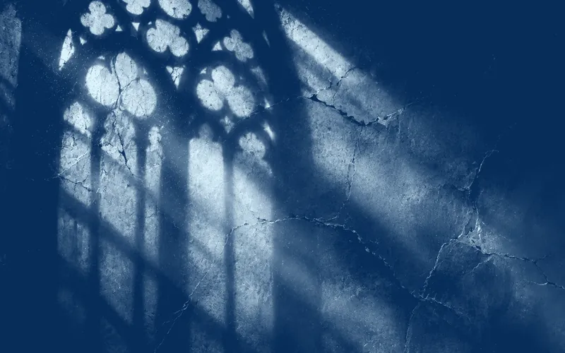

Prologo
La Culla del Cielo
C’era una volta una culla.
Non era fatta di legno e stoffa, ma di pietra e ferro. Non dondolava al soffio del vento, ma resisteva immobile ai secoli, alle guerre, al lento logorarsi delle cose umane. Era sorta su sette colli, bagnata da due fiumi, e le sue mura erano così alte che i nemici, guardandole, dimenticavano di essere nemici.
La chiamavano Illyrium, la Culla del Cielo.
E per più di mille anni aveva cullato un sogno: che la grandezza si potesse costruire, che la potenza si potesse tramandare, che il sangue degli antichi potesse scorrere immutato nelle vene dei nuovi nati. I suoi abitanti camminavano a testa alta, convinti che il cielo li guardasse con favore. I suoi palazzi splendevano di marmi e vetrate. I suoi mercati traboccavano di spezie, sete e polvere di ossa macinate - il mercato dei poteri, lo chiamavano sottovoce.
Illyrium era la luce del mondo.
E come ogni luce, proiettava ombre.
Fuori dalle mura, oltre i fiumi, oltre le colline addomesticate, la terra era diversa. Bruciata. Dimenticata. Gente curva su campi aridi, bambini con le costole che si contano, villaggi che la guerra aveva spazzato via e nessuno aveva mai ricostruito. Illyrium lo sapeva. Ma sceglieva di non vedere. Le mura servivano a tenere fuori il nemico, certo. Ma anche a tenere fuori la verità.
E dentro quelle mura, nascosti nei vicoli stretti, nelle soffitte polverose, nei sotterranei dove la luce non arrivava mai, vivevano quelli che la città preferiva dimenticare. Quelli con il marchio sbagliato. Quelli con il potere sbagliato. Quelli che non erano stati cullati dal cielo, ma solo sfiorati dalla sua ombra.
La Culla del Cielo era piena di crepe.
Ma nessuno le vedeva. O forse nessuno voleva vederle.
Perché guardare una crepa significa ammettere che tutto può crollare. E Illyrium non poteva crollare. Era la capitale. Era il futuro. Era l’avanguardia pronta a condurre il regno alla vittoria nella guerra che tutti sentivano nell’aria, come un odore di bruciato prima dell’incendio.
Così la città continuò a splendere. Le strade piene di gente, le piazze piene di voci, i palazzi pieni di potere. E i dimenticati continuarono a essere dimenticati.
Nessuno sapeva che il cielo, quello vero, stava per voltare le spalle alla sua culla.
Nessuno sapeva che il conto era già aperto.
E nessuno, proprio nessuno, avrebbe scommesso un soldo di rame su un ragazzo che nessuno chiamava per nome che viveva in una soffitta, con le mani sporche di colore e una cicatrice a forma di stella sul petto.